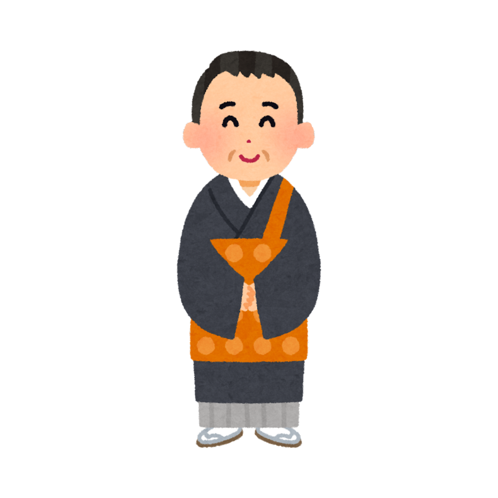

住職の法話と、仏教のやさしい解説

梅雨の季節になりました。雨が続くと、どうしても気持ちが重くなりがちです。しかし仏教では、雨を「慈悲の雨（じひのあめ）」とも表現します。差別なくすべてを潤す雨のように、仏の慈悲はあらゆる生きとし生けるものに降り注ぐのです。
私たちも、日々の言葉や行動が誰かの心を潤すことができます。難しく考えなくても大丈夫。「おはよう」「ありがとう」「お疲れ様」——そんなひとことが、誰かの大切な支えになっているかもしれません。
これは「自分だけが偉い」という意味ではありません。この世に生まれたすべての命は、かけがえのない尊い存在である——そういう意味です。
花まつりの甘茶をかけながら、自分の命の尊さ、そして周りの方々の命の尊さを、改めて感じていただければ幸いです。
お墓参りはご先祖様を偲ぶだけでなく、自分自身を見つめ直す時間でもあります。忙しい日常から少し離れ、「自分はどう生きているか」「大切なものは何か」を静かに問う——それが彼岸の本来の意味です。
仏教の信仰の核心となる、三つの宝物です。
お釈迦様をはじめ、悟りを開いた仏様のこと。私たちの目標であり、よりどころです。
仏様の教え（ダルマ）のこと。苦しみを超えて幸せに生きるための道筋を示しています。
教えを実践し伝える僧侶・修行者の集まり。ともに学び歩む仲間のことです。
過去はすでに過ぎ去り、
未来はまだ来ていない。
今この瞬間に、精一杯生きなさい。
怒りは薪のようなもの。
燃やせば自分が焦げる。
手放せば、心は静かになる。
一日一善。
小さな善い行いを、毎日続けること——
それが積み重なって、人の一生となる。